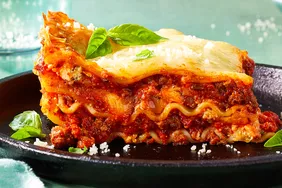

Lasagna Recipe

Recipe Description:
After years of tweaking this recipe, I've finally got it to where I want it.
Everyone raves about this lasagna just the way it is,
although I'll probably never stop tweaking it!
Ingredients:
- 1 pound bulk Italian sausage
- 1 pound ground beef
- 1 cup chopped onion
- 4 cloves garlic, minced
- 2 (8 ounce) cans tomato sauce
- 1 (14 ounce) can crushed tomatoes
- 1 (14 ounce) can Italian-style crushed tomatoes
- 2 (6 ounce) cans tomato paste
- 3 tablespoons chopped fresh basil
- 2 tablespoons chopped fresh parsley
- 2 teaspoons brown sugar
- 1 teaspoon salt
- 1 teaspoon Italian seasoning
- ¼ teaspoon ground black pepper
- ½ teaspoon fennel seeds (Optional)
- ½ cup grated Parmesan cheese
- 12 lasagna noodles
- 1 egg
- 1 (15 ounce) container ricotta cheese
- 2 tablespoons chopped fresh parsley
- ½ teaspoon salt
- 1 pinch ground nutmeg
- 1 (16 ounce) package shredded mozzarella cheese, divided
- ¾ cup grated Parmesan cheese, divided